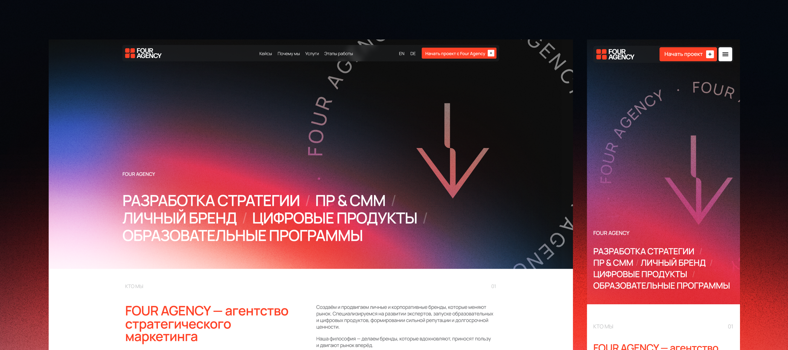
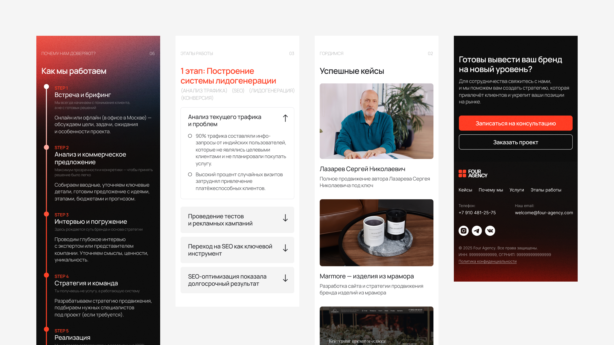
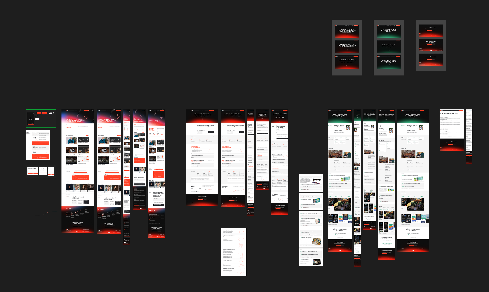
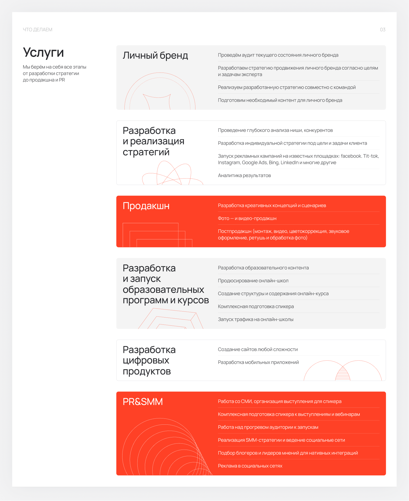
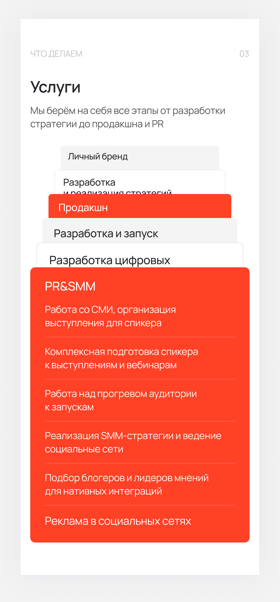
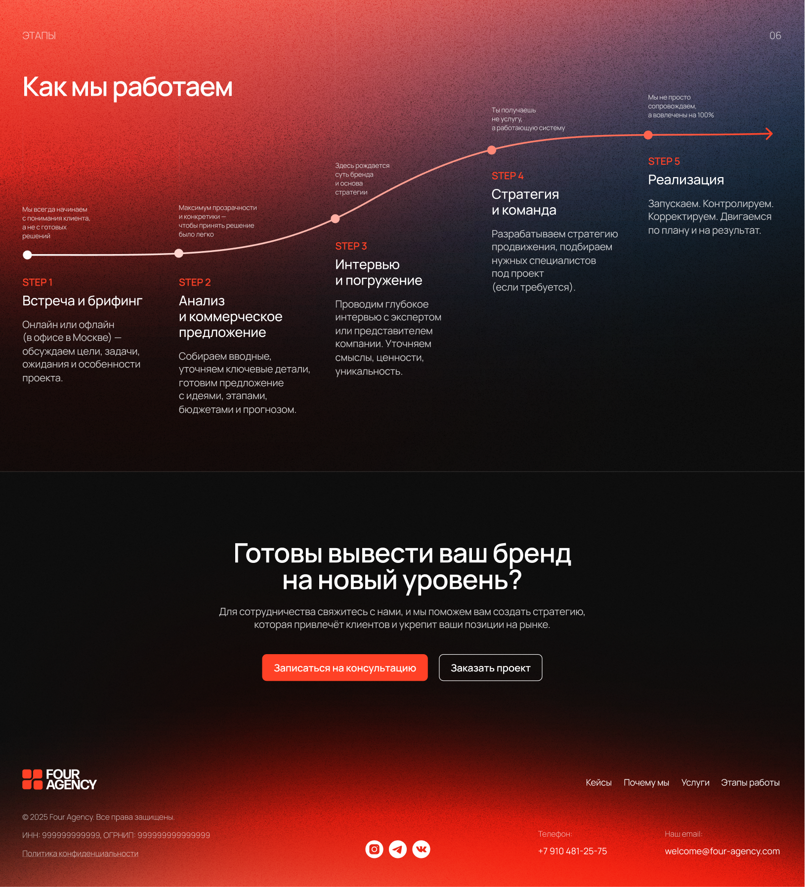
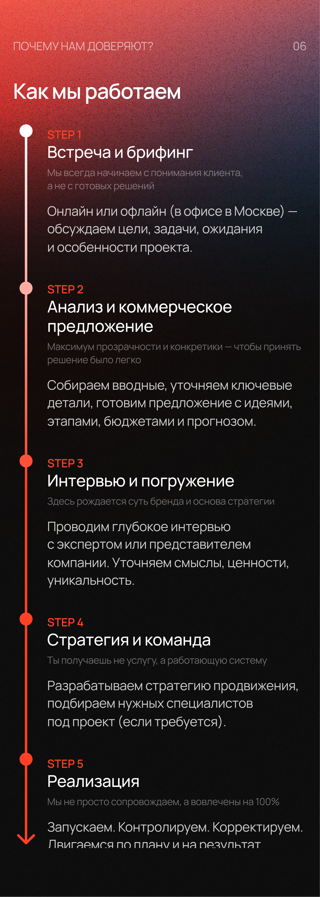
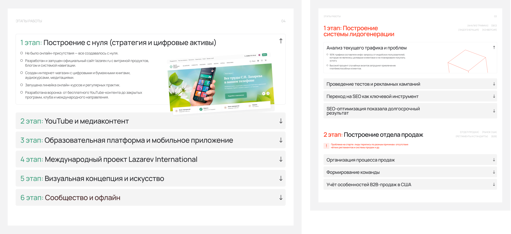
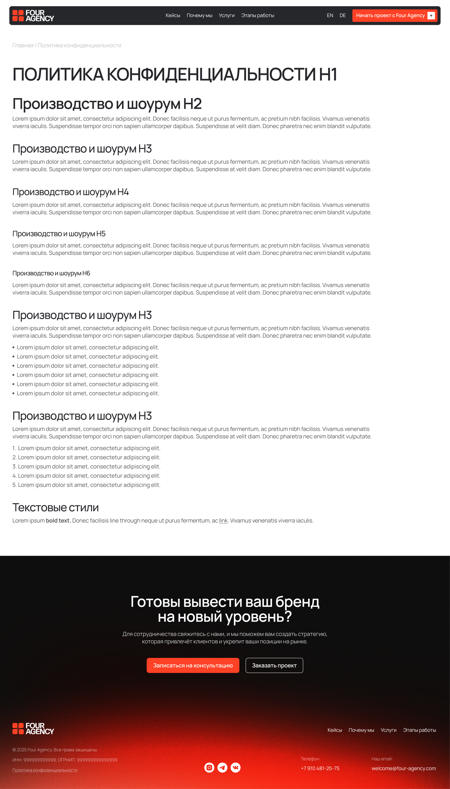
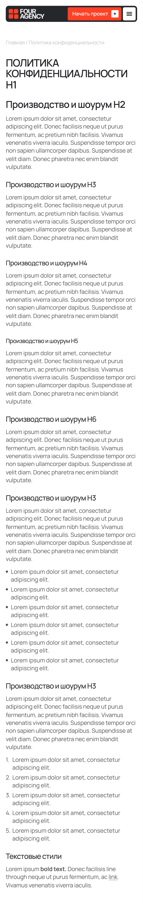

Брендинг и комплексная разработка сайта для маркетингового агентства
- Бренд
- FourAgency
- Тематика
- Маркетинг
- Год
- 2025

О компании
FORAGENCY — креативное агентство, объединяющее стратегию, дизайн и digital-решения. Компания помогает брендам находить свой уникальный стиль, выстраивать коммуникацию с аудиторией и создавать проекты, которые выделяются и решают задачи бизнеса.

Проблема
Бренд FOUR AGENCY нуждался в полном переосмыслении визуальной идентичности. Предстояло разработать современный и узнаваемый фирменный стиль, который отражает характер агентства, выделяет его среди конкурентов и формирует целостный образ компании. Основные задачи:
- Переосмыслить визуальный образ бренда и определить новое направление его развития
- Продумать структуру сайта с акцентом на услуги, проекты и экспертизу агентства
- Создать узнаваемый логотип и единую систему фирменных элементов
- Подобрать типографику, цветовую палитру и графические приёмы
- Обеспечить единообразие оформления на цифровых и печатных носителях
- Предусмотреть возможность развития сайта и добавления новых проектов и разделов








Что получилось
В результате был проведён полный ребрендинг FOUR AGENCY и разработан современный сайт с выразительной визуальной системой, отражающей характер и позиционирование агентства.
- Обновлённая айдентика с новым логотипом, цветовой палитрой и типографикой
- Главная страница с презентацией агентства, его услуг и ключевых проектов
- Две внутренние страницы с детальной проработкой структуры и контента
- Интерактивные элементы и эффекты, усиливающие визуальное восприятие сайта
- Проработанные состояния кнопок, ссылок и других элементов интерфейса
- Единая система компонентов для поддержания визуальной целостности
- Адаптивные решения для корректного отображения на разных устройствах
- Гибкая структура для дальнейшего развития сайта и добавления новых разделов
В результате сформирован целостный визуальный образ FOUR AGENCY, объединяющий фирменный стиль и цифровую среду. Новый сайт помогает презентовать экспертизу агентства, раскрывать его проекты и выстраивать коммуникацию с потенциальными клиентами.